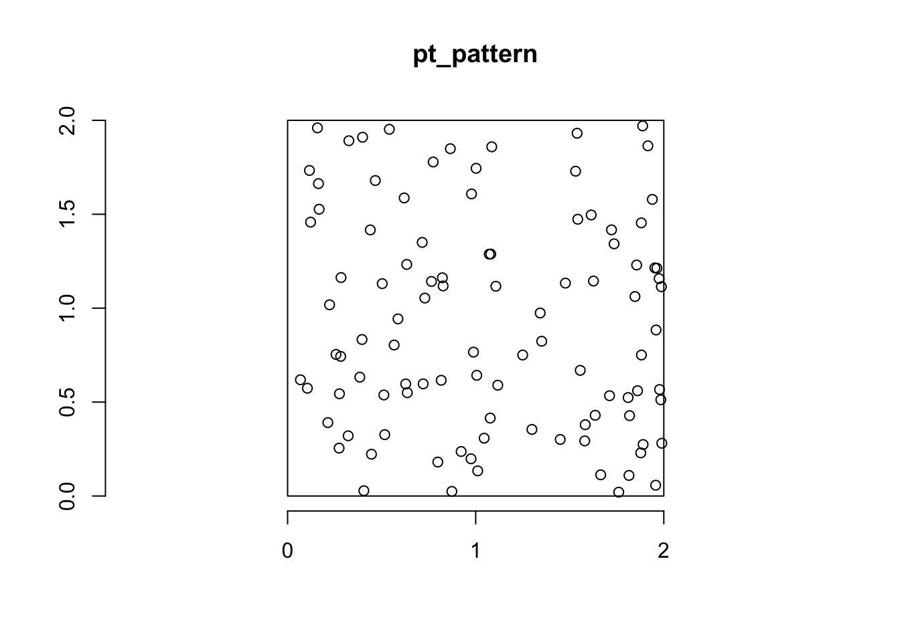
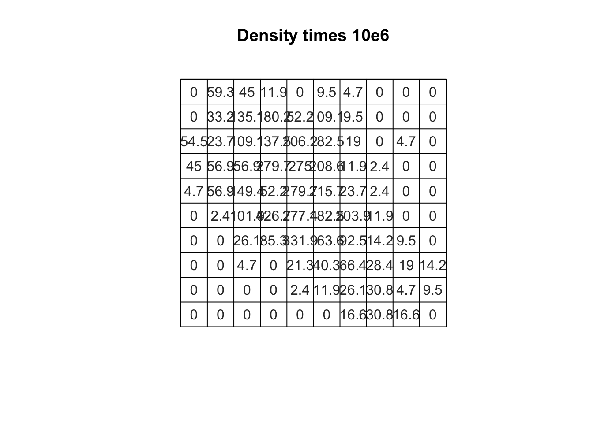

First, we’ll have to get our credentials and login to a new RStudio session. You can create your own repository if you’d like to track these things. You’ll have to copy your googledrive download function from a previous repo.
The spatstat package contains a powerful set of functions for point pattern analyses. We’ll only be exploring a handful of these capabilities in this course, but I would encourage you to take a look at the webpage to get a sense for all of the things spatstat can do!!
At its core, spatstat relies on two different classes of objects. A ppp object referring to a Point Pattern on a Plane and an owin object referring to the Observational Window to consider for the point pattern.
We can get a sense for how these work by generating a [0,2] by [0,2] window and simulating random points within that window.
Code
win <-owin(xrange =c(0,2), yrange =c(0,2))#simulate x and y coordinates using a uniform distribution between 0 and 2x <-runif(100, 0, 2)y <-runif(100, 0, 2)#combine into a ppp objectpt_pattern <-ppp(x = x, y = y, window = win)pt_pattern
Planar point pattern: 100 points
window: rectangle = [0, 2] x [0, 2] units
Code
plot(pt_pattern)axis(1)axis(2)

This way takes advantage the random-number generating functions you already know (runif or rnorm or rpois) and combines them into a ppp object. You can do this a bit more easily using the runifpoint function in spatstat.
Code
pt_pattern2 <-runifpoint(100, win = win, nsim =3)
One of the benefits of this approach is the ability to set the nsim argument which allows you to generate as many realizations of the uniform point process as you’d like. This is handy for Monte-Carlo style estimation of various sumary statistics and p-values (which we’ll discuss later).
Finally, we can use the rpoispp function to generate random point patterns following our Poisson point process formulation for point patterns. Setting the lambda argument to a single, positive number (the Poisson distribution is only valid for positive counts) generates a CSR pattern, but you can also provide functions or additional data if you’re interested in the inhomogeneous Poisson point process (which we’ll discuss in the modeling portion of the course). Note that lambda is the rate of the Poisson distribution which means that each simulation may have different numbers of points (try rpois(n=5, lambda = 4 to see what I mean).
We can estimate the local density of our crimes data by dividing the study area into subregions (which we’ll call quadrats). Within each quadrat, we count the number of points and divide by the area to get a spatially localized estimate of the intensity of the point process. Under a CSR assumption, densities should not vary (significantly) from quadrat to quadrat. Let’s try it.
Rows: 57751 Columns: 33
── Column specification ────────────────────────────────────────────────────────
Delimiter: ","
chr (24): DRNumber, IncidentType, CrimeCode, CrimeCodeDescription, CrimeCode...
dbl (9): OBJECTID, ChargeID, District, Occurred_HR, Occurred_MO, Occurred_D...
ℹ Use `spec()` to retrieve the full column specification for this data.
ℹ Specify the column types or set `show_col_types = FALSE` to quiet this message.
Warning: attribute variables are assumed to be spatially constant throughout
all geometries
Code
boise_ppp <-as.ppp(st_coordinates(boise_felonies), W =st_bbox(boise_felonies))
Warning: data contain duplicated points
First, we load our BPD patrol areas to get a reasonable study area. Then we load our crimes data (our point process) and filter it down to just the felonies that have occurred in Boise since 2024. Finally, we convert this into a ppp object by providing the coordinates and bounding box. On Wednesday, I’ll show you how to bring in additional covariates (i.e., marks) with the data.
Now that our crimes data is available for use in spatstat we can generate a simple quadrat count.
Code
Q.dim <-10Q <-quadratcount(boise_ppp, nx=Q.dim, ny=Q.dim)A <- spatstat.geom::area(boise_ppp$window) / Q.dim^2# Area for each quadratplot(Q / A, main="Density times 10e6", col="grey20", entries =round(Q/A*10e6, digits =1))

There are a few things to note here. First, I set Q.dim arbitrarilty to reflect the number of dimensions I’d like the quadrats to be placed in. I provide this to both the nx and ny argument of quadratcount which means that if Q.dim = 10, I’ll have 100 quadrats. I then estimate the area of each quadrat by dividing the total area of the bounding box by the number of quadrats. Finally, I combine these into a plot and estimate the density by dividing Q/A (and multiplying that by 1e6 because the counts are very small relative to the area of the quadrats).
It can be a little difficult to determine whether you’re densities deviate from what we’d expect under CSR (especially when you’re working with a lot of points or large quadrats). We can use a simple \(\chi^2\) test to compare the observed densities to the expected densities using the quadrat.test function. There are a variety of options for the quadrat.test, but one thing to note is that you can use the MonteCarlo method to generate an empirical distribution via simulation (rather than the theoretical distribution implied by the \(\chi^2\))
Chi-squared test of CSR using quadrat counts
data: boise_ppp
X2 = 5976.3, df = 99, p-value < 2.2e-16
alternative hypothesis: two.sided
Quadrats: 10 by 10 grid of tiles
Conditional Monte Carlo test of CSR using quadrat counts
Test statistic: Pearson X2 statistic
data: boise_ppp
X2 = 5976.3, p-value = 0.006645
alternative hypothesis: two.sided
Quadrats: 10 by 10 grid of tiles
A Few, Final Thoughts On Quadrat Counts
These are, admittedly simple, ways of estimating the density of events and comparing them to an expectation of Complete Spatial Randomness. As importantly, your results are often contingent upon the size, shape, and number of quadrats you use. As such, this can serve as an important exploratory step in your analysis (trying to identify other variables that should be included, testing for spatial autocorrelation, etc), but is probably not the final step in any analysis you do.
Kernel Density Estimates for our Crimes Data
The kernel density approach is a method for estimating the spatial intensity of a point pattern. Like quadrat density, it computes localized density values, but it does so using a moving window called a kernel that overlaps across space, producing a smoother and more continuous estimate of intensity. The kernel function defines how weights are assigned to observations of various distances.
KDE can be helpful in situations where we aren’t sure what the quadrat size should be or where we think the assignment of quadrats is arbitrary. Instead, we estimate “local density” through the moving window defined by the kernel. I’ve shown some examples below, illustrating how you might plot this. In our case, there’s not a ton of difference because our points are so concentrated in the upper portion of the study area.
---title: "Point Patterns I"---## Getting StartedFirst, we'll have to [get our credentials](https://rstudio.aws.boisestate.edu/) and login to a [new RStudio session](https://rstudio.apps.aws.boisestate.edu/). You can create your own repository if you'd like to track these things. You'll have to copy your googledrive download function from a previous repo.```{r}#| message: falselibrary(sf)library(spatstat)library(googledrive)library(tidyverse)source("scripts/utilities/download_utils.R")file_list <-drive_ls(drive_get(as_id("https://drive.google.com/drive/folders/1BY24_G3bp6gfbu3BaioZb_eS0nzCwq7a?dmr=1&ec=wgc-drive-globalnav-goto")))file_list %>% dplyr::select(id, name) %>% purrr::pmap(function(id, name) {gdrive_folder_download(list(id = id, name = name),dstfldr ="inclass15") })```## Getting the Feel For SpatstatThe `spatstat` package contains a powerful set of functions for point pattern analyses. We'll only be exploring a handful of these capabilities in this course, but I would encourage you to take a [look at the webpage](https://spatstat.org/resources.html) to get a sense for all of the things `spatstat` can do!!At its core, `spatstat` relies on two different classes of objects. A `ppp` object referring to a **Point Pattern on a Plane** and an `owin` object referring to the **Observational Window** to consider for the point pattern.We can get a sense for how these work by generating a [0,2] by [0,2] window and simulating random points within that window.```{r simpts}win <-owin(xrange =c(0,2), yrange =c(0,2))#simulate x and y coordinates using a uniform distribution between 0 and 2x <-runif(100, 0, 2)y <-runif(100, 0, 2)#combine into a ppp objectpt_pattern <-ppp(x = x, y = y, window = win)pt_patternplot(pt_pattern)axis(1)axis(2)```This way takes advantage the random-number generating functions you already know (`runif` or `rnorm` or `rpois`) and combines them into a `ppp` object. You can do this a bit more easily using the `runifpoint` function in `spatstat`.```{r unfipt}pt_pattern2 <-runifpoint(100, win = win, nsim =3)```One of the benefits of this approach is the ability to set the `nsim` argument which allows you to generate as many realizations of the uniform point process as you'd like. This is handy for Monte-Carlo style estimation of various sumary statistics and p-values (which we'll discuss later).Finally, we can use the `rpoispp` function to generate random point patterns following our Poisson point process formulation for point patterns. Setting the `lambda` argument to a single, positive number (the Poisson distribution is only valid for positive counts) generates a CSR pattern, but you can also provide functions or additional data if you're interested in the inhomogeneous Poisson point process (which we'll discuss in the modeling portion of the course). Note that `lambda` is the rate of the Poisson distribution which means that each simulation may have different numbers of points (try `rpois(n=5, lambda = 4` to see what I mean).```{r pois}pt_pattern3 <-rpoispp(lambda =4,win = win,nsim =5)plot(pt_pattern3)```## Quadrat Counts for our Crimes DataWe can estimate the **local density** of our crimes data by dividing the study area into subregions (which we'll call quadrats). Within each quadrat, we count the number of points and divide by the area to get a spatially localized estimate of the *intensity* of the point process. Under a CSR assumption, densities should not vary (significantly) from quadrat to quadrat. Let's try it.```{r convppp}bpd_box <-read_sf("data/original/inclass15/BPDPatrolAreas.shp") %>%st_transform(., crs ="EPSG:8826")boise_felonies <-read_csv("data/original/inclass15/BPDCrimesPublic.csv" ) %>%st_as_sf(., coords =c('x', 'y'), crs ="ESRI:102459") %>%st_transform(., crs ="EPSG:8826") %>%st_crop(., bpd_box) %>%filter(Severity =="Felony"& Occurred_YR >2024) boise_ppp <-as.ppp(st_coordinates(boise_felonies), W =st_bbox(boise_felonies))```First, we load our BPD patrol areas to get a reasonable study area. Then we load our crimes data (our point process) and filter it down to just the felonies that have occurred in Boise since 2024. Finally, we convert this into a `ppp` object by providing the coordinates and bounding box. On Wednesday, I'll show you how to bring in additional covariates (i.e., marks) with the data.Now that our crimes data is available for use in `spatstat` we can generate a simple quadrat count. ```{r qct}Q.dim <-10Q <-quadratcount(boise_ppp, nx=Q.dim, ny=Q.dim)A <- spatstat.geom::area(boise_ppp$window) / Q.dim^2# Area for each quadratplot(Q / A, main="Density times 10e6", col="grey20", entries =round(Q/A*10e6, digits =1))```There are a few things to note here. First, I set `Q.dim` arbitrarilty to reflect the number of dimensions I'd like the quadrats to be placed in. I provide this to both the `nx` and `ny` argument of `quadratcount` which means that if `Q.dim = 10`, I'll have 100 quadrats. I then estimate the area of each quadrat by dividing the total area of the bounding box by the number of quadrats. Finally, I combine these into a plot and estimate the density by dividing Q/A (and multiplying that by 1e6 because the counts are very small relative to the area of the quadrats). It can be a little difficult to determine whether you're densities deviate from what we'd expect under CSR (especially when you're working with a lot of points or large quadrats). We can use a simple $\chi^2$ test to compare the observed densities to the expected densities using the `quadrat.test` function. There are a variety of options for the `quadrat.test`, but one thing to note is that you can use the `MonteCarlo` method to generate an empirical distribution via simulation (rather than the theoretical distribution implied by the $\chi^2$)```{r}quadrat.test(boise_ppp,nx = Q.dim,ny = Q.dim,method ="Chisq")quadrat.test(boise_ppp,nx = Q.dim,ny = Q.dim,method ="MonteCarlo",nsim =300)```### A Few, Final Thoughts On Quadrat CountsThese are, admittedly simple, ways of estimating the density of events and comparing them to an expectation of Complete Spatial Randomness. As importantly, your results are often contingent upon the size, shape, and number of quadrats you use. As such, this can serve as an important exploratory step in your analysis (trying to identify other variables that should be included, testing for spatial autocorrelation, etc), but is probably not the final step in any analysis you do.## Kernel Density Estimates for our Crimes DataThe kernel density approach is a method for estimating the spatial intensity of a point pattern. Like quadrat density, it computes localized density values, but it does so using a **moving window** called a **kernel** that overlaps across space, producing a smoother and more continuous estimate of intensity. The **kernel function** defines how weights are assigned to observations of various distances. KDE can be helpful in situations where we aren't sure what the quadrat size should be or where we think the assignment of quadrats is arbitrary. Instead, we estimate "local density" through the moving window defined by the kernel. I've shown some examples below, illustrating how you might plot this. In our case, there's not a ton of difference because our points are so concentrated in the upper portion of the study area.```{r kdcrimes}plot(density(boise_ppp, bw=0.5))plot(density(boise_ppp, kernel ="gaussian", bw=10))plot(density(boise_ppp, kernel ="gaussian", bw=1e20))```